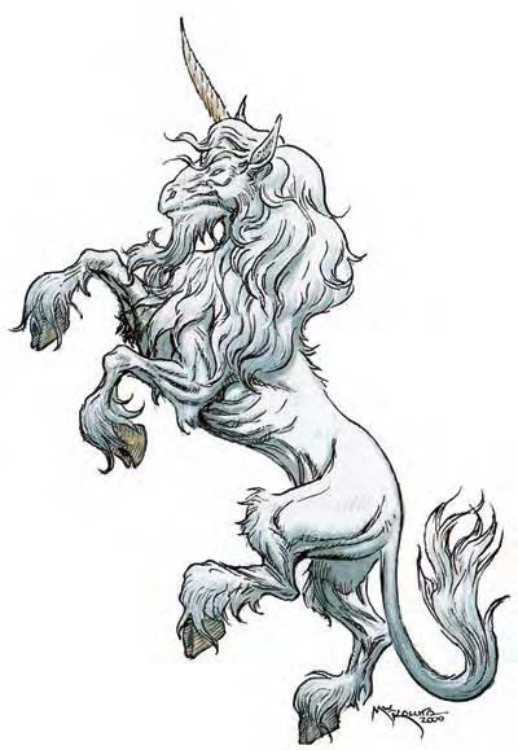

独角兽外观似马，眼睛大而有神，全身披覆白色如丝缎般发亮的毛皮，前额和颈部的马鬃更长且飘逸。额头中央生有一支象牙色的犄角，长约2英尺，蹄分为两片。
除了木族生物（树精、皮克精等）以外，独角兽这种强壮高贵的生物不喜欢和其他生物接触，只有在保卫树林栖息地时才会现身。
独角兽的眼睛可能是深邃的蓝色、紫色、棕色或发亮的金色，雄性通常有白色的胡须。
独角兽一生只有一个配偶，会在所护卫的森林中找寻开阔的小溪谷或林间空地当作居所。善良或中立的旅人可以自由穿越独角兽守护的森林，甚至在其中猎食。然而，他们对待邪恶生物就没那么友善。若独角兽发现有人恶意破坏森林或滥捕滥杀，他们也会主动攻击。
有些独居的独角兽会被人驯养，但只有心地纯洁的善良人类或精灵少女才能骑乘。只要好好对待他们，独角兽会对少女永远忠诚并尽力保护她，也会为她离开钟爱的森林。
传说中，独角兽的角具有神奇的医疗能力，价值甚至高达2000金币，为此，邪恶妄在的生物有时会特地捕捉并取得独角兽的角，以制造治疗药水或装置。然而大部分善良生物都不愿意买卖独角兽的角。
一般雄性独角兽的身长可达8英尺，肩高5英尺，重达1200磅。雌性相对较为瘦小。
独角兽通晓木族语以及通用语。
| 资料栏位 | 独角兽 (Unicorn) 大型魔法兽 |
| 生命骰 | 4d10+20 (42HP) |
| 先攻 | +3 |
| 速度 | 60英尺 (12格) |
| 防御等级 | 18 (-1体型、+3敏捷、+6天生)、接触12、措手不及15 |
| 基本攻击/擒抱 | +4 / +13 |
| 攻击 | 犄角+11近战 (1d8+8) |
| 全力攻击 | 犄角+11近战 (1d8+8) 及 2蹄踏+3近战 (1d4+2) |
| 占据/触及 | 10英尺 / 5英尺 |
| 特殊攻击 | 反邪恶法阵、类法术能力、对毒素、魅惑、濒死免疫 |
| 特殊能力 | 黑暗视觉60英尺、昏暗视觉、灵敏嗅觉、理解动物 |
| 豁免 | 强韧+9、反射+7、意志+6 |
| 属性 | 力量20、敏捷17、体质21、智力10、感知21、魅力24 |
| 技能 | 跳跃+21、聆听+11、潜行+9、侦察+11、生存+8 |
| 专长 | 警觉、专攻技能 (生存) |
| 环境 | 温带森林 |
| 组织 | 单独、成双或成队 (3-6) |
| 宝藏 | 无 |
| 阵营 | 总是混乱善良 |
| 进化 | 5-8HD (大型) |
| 等级修正值 | +4 (部属) |
独角兽通常只有在保护自己或森林时才会主动攻击。他们会将犄角当长枪一样向敌人冲刺攻击，也可以用足蹄踩踏敌人。犄角是+3魔法武器，但只要和独角兽的身体分离就失去魔法能力。
反邪恶法阵 (超自然)：效果与同名法术相同，此能力永远有效，独角兽自身无法压抑本身的反邪恶法阵。
类法术能力：独角兽可以随意使用“侦测邪恶”，属于即时动作。每天可以使用一次“高等传送术”，但起始点必须在栖息地内，不能传送出森林，也不能从外面传送进来。
只需用犄角接触受伤的生物，独角兽每天即可施展3次“治疗轻伤”、1次“治疗中度伤”，每天还可以施展1次“中和毒性” (DC=21，施法者等级8)。豁免检定DC的调整值与魅力调整值相同。
理解动物 (特异)：与德鲁伊的“理解动物”职业特性相同，但独角兽在检定时具有+4种族加值。
技能：独角兽在进行“潜行”检定时具有+4种族加值。*处于守卫的森林范围内时，独角兽进行“生存”检定具有+3表现加值。
天界突骑是善良的守护者，誓死对抗任何破坏森林或其居民的邪恶生物。她们是森林女神艾罗娜的忠诚信徒。
| 资料栏位 | 天界突骑、7级牧师 大型魔法兽 |
| 生命骰 | 8d10+8d8+75 (155HP) |
| 先攻 | +4 |
| 速度 | 60英尺 (12格) |
| 防御等级 | 24 (-1体型、+4敏捷、+6天生、+5 “+5防御护腕”)、接触13、措手不及20 |
| 基本攻击/擒抱 | +12 / +24 |
| 攻击 | 犄角+22近战 (1d8+10) |
| 全力攻击 | 犄角+22近战 (1d8+10) 及 2蹄踏+14近战 (1d4+3) |
| 占据/触及 | 10英尺 / 5英尺 |
| 特殊攻击 | 破邪斩、法术、召唤不死生物 |
| 特殊能力 | 伤害减免5 / 魔法、黑暗视觉60英尺、对毒素、魅惑及恐惧免疫、昏暗视觉、反邪恶法阵、强酸抗力10、寒冷抗力10、电击抗力10、灵敏嗅觉、类法术能力、法术抗力20、理解动物 |
| 豁免 | 强韧+16、反射+12、意志+15 |
| 属性 | 力量24、敏捷18、体质20、智力13、感知27、魅力22 |
| 技能 | 专注+11、自然知识+14、宗教知识+8、聆听+15、潜行+12、法术辨识+10、侦察+15 |
| 专长 | 警觉、战斗施法、额外驱散、精通驱散、健跑、专攻技能 (生存) |
| 环境 | 天界七山 |
| 组织 | 单独 |
| 宝藏 | 无 |
| 阵营 | 总是混乱善良 |
| 进化 | 视人物职业而定 |
| 等级修正值 | +6 (部属) |
因为生命骰和魅力值提高，天界突骑“中和毒性”能力的豁免检定DC=20。
在计算伤害减免时，天界突骑的天生武器都视为魔法武器。
破邪斩 (超自然)：每天1次，天界突骑可对邪恶阵营敌人进行一般近战攻击时，造成15点额外伤害。
一般已准备牧师法术 (6/7/6/5/4；豁免检定DC=18+法术等级)：
零级――“侦测魔法”、“侦测毒性” (2)、“光亮术”、“恩赐” (2)；
一级――“祝福术” (2)、“安抚动物”*、“隐雾术”、“移除恐惧”、“圣域术”、“虔诚护盾”；
二级――“援助术”*、 “动物使者”、“次级复原术”、“移除麻痹”、“护卫他人”；
三级――“祈祷术”、“防护能量伤害”、“移除诅咒”、“灼热光辉” (2)；
四级――“凌空而行”、“神圣”、“圣光击”*、“复原术”。
*领域法术。领域：动物以及善良。
| 对比项 | 独角兽 | 天界突骑 |
|---|---|---|
| 生命骰 | 4d10+20 (42HP) | 8d10+8d8+75 (155HP) |
| 先攻 | +3 | +4 |
| 防御等级 | 18 (-1体型、+3敏捷、+6天生)、接触12、措手不及15 | 24 (-1体型、+4敏捷、+6天生、+5“+5防御护腕”)、接触13、措手不及20 |
| 基本攻击/擒抱 | +4 / +13 | +12 / +24 |
| 攻击 | 犄角+11近战 (1d8+8) | 犄角+22近战 (1d8+10) |
| 全力攻击 | 犄角+11近战 (1d8+8) 及 2蹄踏+3近战 (1d4+2) | 犄角+22近战 (1d8+10) 及 2蹄踏+14近战 (1d4+3) |
| 特殊攻击 | 反邪恶法阵、类法术能力 | 破邪斩、法术 |
| 特殊能力 | 对毒素、魅惑、濒死免疫 | 对毒素、魅惑及恐惧免疫、伤害减免5/魔法、强酸抗力10、寒冷抗力10、电击抗力10、法术抗力20 |
| 豁免 | 强韧+9、反射+7、意志+6 | 强韧+16、反射+12、意志+15 |
| 属性 | 力量20、敏捷17、体质21、智力10、感知21、魅力24 | 力量24、敏捷18、体质20、智力13、感知27、魅力22 |
| 挑战级数 | 3 | 13 |